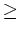

Next: pmexican2d
Up: The commands in alphabetical
Previous: pgmwrite
Contents
Subsections
phin
The scaling function associated to the pseudo-diff operator
Syntax
[out] = phin(k,n)
Description
this function computes the scaling function
associated to the pseudo-diff operator kn, n 2
using the recursion formula:
phi_n(k) = 0.5*k^(n-2) + 0.5*(n-2)*phi_(n-2)(k)
Input Data
- k
- [REAL MATRIX]: The radial frequency
- n
- [INTEGER]: The order of the function (see formula above)
Output Data
- out
- [REAL MATRIX]: the resulting function
Example(s)
References
See Also
iwpck2d, pseudiff,, wpck2d, yashow_wpck2d
discrete/packet/2d/wpck_defs/phin.m